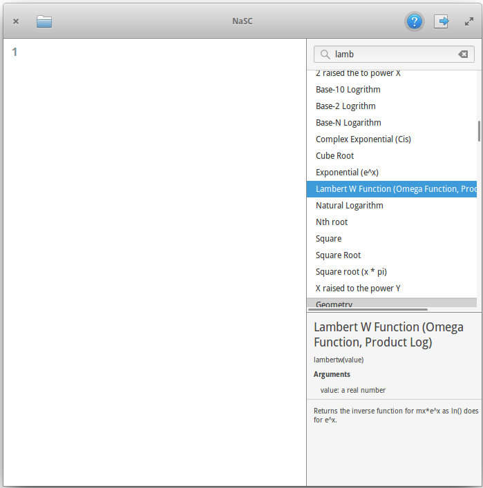
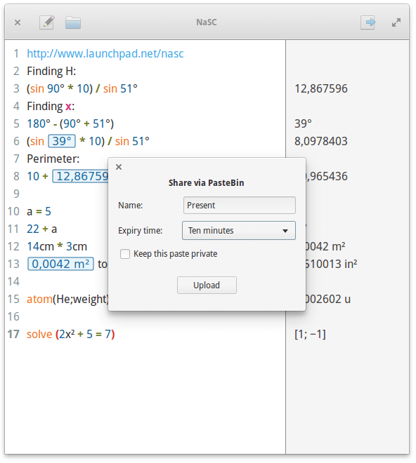

Its an app where you do maths like a normal person. It lets you type whatever you want and smartly figures out what is math and spits out an answer on the right pane. Then you can plug those answers in to future equations and if that answer changes, so does the equations its used in.



Installation:
sudo apt-add-repository ppa:nasc-team/daily
sudo apt-get update
sudo apt-get install nasc